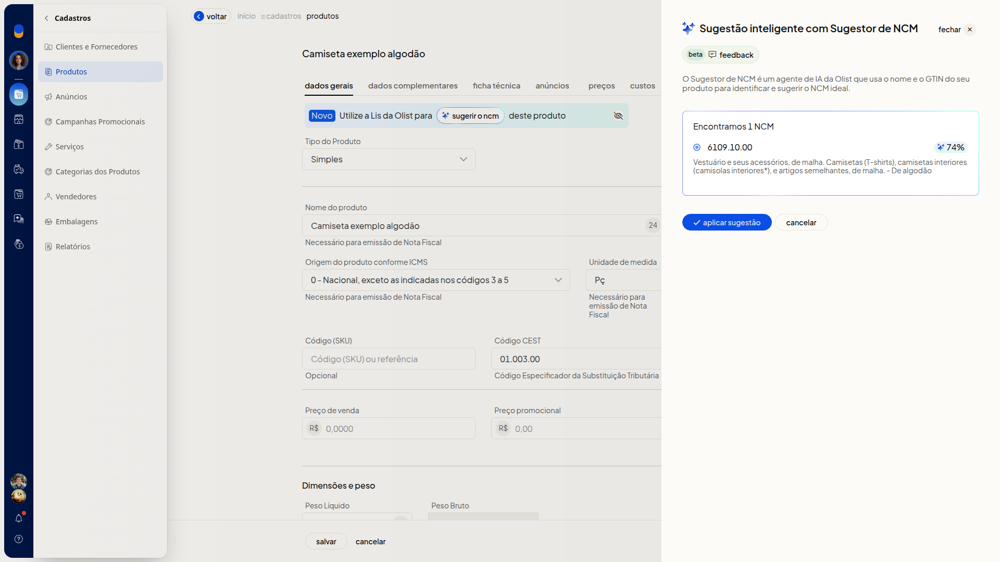

Sugestão de NCM com IA
Importante
- O agente de sugestão usa o nome do produto e o GTIN. Informe o nome antes de pedir a sugestão.
- Se o produto não possuir GTIN, deixe o campo Código de barras (GTIN) em branco.
Instruções
Pedir a sugestão na ficha do produto
-
Acesse Cadastros > Produtos.
-
Clique em Incluir produto.
-
Informe o nome do produto na aba Dados Gerais.
-
No campo NCM, clique em sugerir.
-
Confira o código, a descrição e o percentual no painel Sugestor de NCM.
-
Clique em aplicar sugestão para usar o código, ou em cancelar para fechar sem aplicar.

Consultar o último lote de sugestão
-
Acesse Cadastros > Produtos.
-
Abra Mais ações.
-
Clique em Consultar último lote de sugestão de ncm.
-
Leia a quantidade de produtos preenchidos e a data e a hora de término no painel Preenchimento inteligente com Sugestor de NCM. Para voltar à listagem, acesse o link Voltar para a tela de cadastro de produtos.

Informações adicionais
- Clicar no card do lote não abre o detalhe dos produtos.